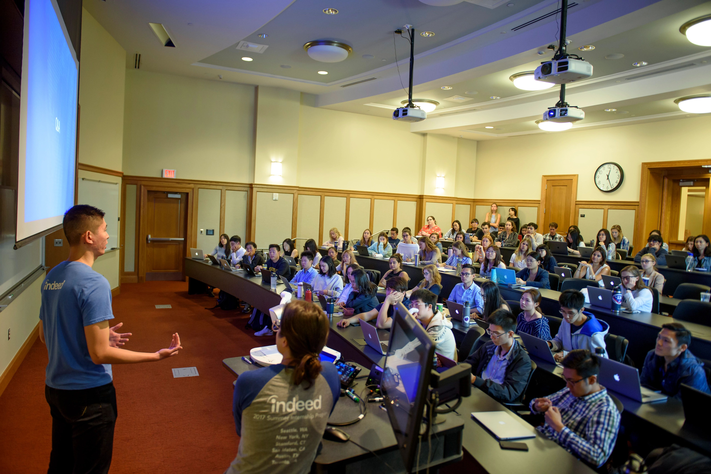

We are happy to offer both in-person and virtual services. CAPS is committed to creating an environment based on our values of multicultural, multi-disciplinary, and multi-theoretical practices that allow our diverse student body to access care, receive high-quality services, and take positive pathways to mental health.
CAPS has a limited number of private spaces available for students to connect with their counselor via telecounseling. Please contact the front desk for more information on those private spaces.
Individual Peer Counseling
Individual peer counseling is a service provided by CAPS that allows students to talk to other students who are trained to provide support. This service is free and confidential.
Uwill Teletherapy Services
Uwill is an addition to CAPS services that provides students with video, phone, chat, and message sessions with licensed mental health professionals at no cost. This additional counseling option offers students greater flexibility and allows CAPS to expand its service capacity.
Scope of Services
In support of the educational goals of the University and the Division of Student Life, Counseling and Psychological Services (CAPS) provides a range of clinical, preventative, and training services consistent with the practices and standards of a nationally accredited university counseling center. CAPS is committed to creating a safe and supportive environment based on our multicultural, multi-disciplinary, and multi-theoretical values and practices that allow our diverse student body to access care, to receive high-quality services, and to take positive pathways to mental health.
Our Front Desk (Michigan Union 4th Floor) is open and ready to help support you -- staff members are available throughout the day to assist you with your needs, answer questions, and get you to the right place. We can be reached by phone at: (734) 764-8312.

Please Note: During high-demand periods, CAPS will be unable to accommodate class-related interviews and/or projects. Many students are able to find the information they need within our website and our annual reports.
Location
University Health & Counseling:
CAPS Counseling and Psychological Services
Michigan Union, Suite 4079
530 South State Street
Ann Arbor, MI 48109